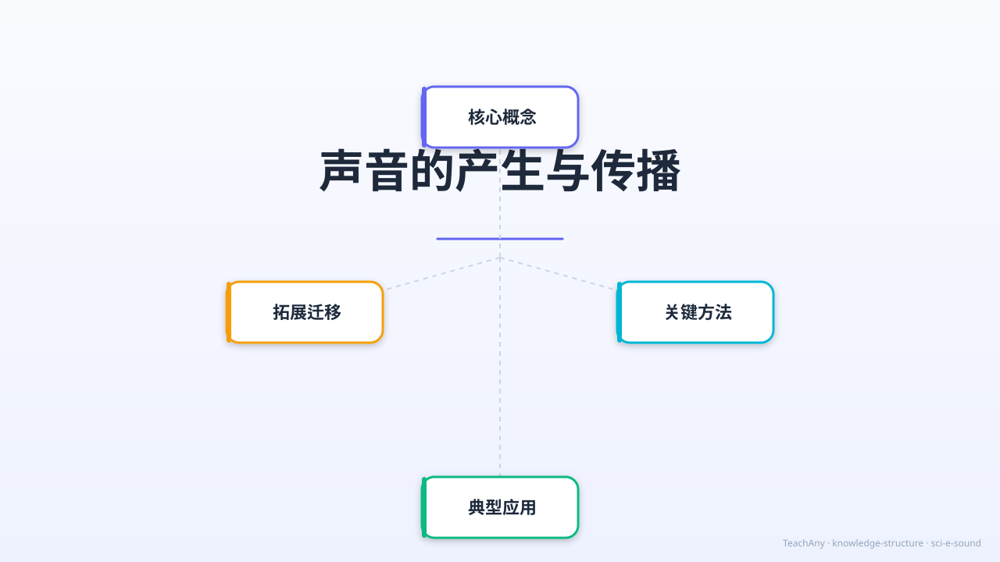

小学科学 G4 · 物质科学 · 探索振动与传播的奥秘

理解声音由振动产生，掌握音调、响度、音色三要素，了解声音在不同介质中的传播规律。
能通过控制变量实验探究音调与频率的关系，分析声波特征，利用声学原理解释生活现象。
感受声学在生活中的广泛应用（超声波、声呐），增强科学意识，树立保护听力的健康观念。
我们每天听到各种各样的声音——音乐、说话声、风声……
拨动吉他弦，弦会振动；敲击音叉，音叉会颤动。声音无处不在。
但是，声音究竟是怎么产生的？ 它又是如何从振动的物体传到我们耳朵里的？ 在太空中，宇航员为什么无法直接交谈？
今天，我们将通过实验和互动动画，揭开声音产生与传播的秘密， 探索音调、响度、音色三要素，了解声音在固液气中的传播规律！
通过 Remotion 动画，直观呈现声波从振动源向外扩散的过程，以及声音三要素和传播介质对比。
▶ 视频含5个场景：标题→振动动画→三要素可视化→介质对比→课堂总结（660帧 @30fps，22秒）
声音是由物体振动产生的。振动停止，声音也随之消失。 这就是声音产生的根本原因。
弦振动→空气振动→声波传入耳朵。用手轻压弦，振动停止，声音立刻消失。
轻触正在发声的音叉，你会感受到振动。音叉振动越强，声音越大。
在鼓面放小纸屑，敲击时纸屑会跳起来——这证明鼓面在振动！
将手轻放在喉咙，你能感受到声带振动。停止说话，振动立刻消失。
音调、响度、音色是描述声音特征的三个维度，分别由频率、振幅和波形决定。
声音的高低。由振动频率决定。
频率越高（振动越快）→ 音调越高（如女高音、鸟鸣）。
频率越低（振动越慢）→ 音调越低（如男低音、雷声）。
声音的大小（强弱）。由振动振幅决定。
振幅越大 → 响度越大（声音越响）。
振幅越小 → 响度越小（声音越轻）。
声音的质感/特色。由振动波形决定。
不同乐器演奏相同音调和响度的声音，音色不同。
音色是声音的"指纹"，帮助我们区分不同声源。
拖动滑块调节频率（音调）和振幅（响度），观察声波波形的实时变化。 点击"模拟声音"按钮生成示波器效果，感受声波动画。
点击各介质卡片，观察声波在不同介质中的传播速度和方式。 固体 > 液体 > 气体，真空中声音无法传播。
声音遇到障碍物会发生反射，形成回声。 大自然中许多动物和现代科技都在利用声波的特性。
声音遇到障碍物反射回来形成回声。至少需要 0.1 秒间隔人耳才能区分原声和回声。 山谷、空旷大厅都能产生回声。
蝙蝠发出超声波（>20000 Hz），根据回声判断猎物位置和距离——这就是"回声定位"原理。
海豚通过发出声波并接收回声来定位鱼群，与现代声纳技术原理相同。
医疗超声波检查利用超声波在人体组织中的反射，无创查看内部器官和胎儿。
完成以下练习，检测你对声音知识的掌握程度。选择后会立即显示详细解析。
噪声是指超过正常范围的声音，会对听力和健康造成损害。保护好我们的听力非常重要。
长期处于高分贝环境（>85dB）会导致听力下降甚至耳聋。 噪声还会影响睡眠、学习和心理健康。
① 佩戴耳塞/耳机隔音；② 声源处安装消音设备； ③ 在传播路径上建隔音墙；④ 控制音量，避免在噪声环境久待。
低语：30 dB · 正常谈话：60 dB · 汽车喇叭：90 dB · 噪声超过 140 dB 可能直接导致听力损伤。
声音由振动产生，通过介质传播，真空中不能传声。 音调（频率）、响度（振幅）、音色（波形）是声音的三要素。
物体振动→声音产生；停止振动→声音消失。
声音是机械波。
音调（频率）· 响度（振幅）· 音色（波形）
三要素共同描述声音特征。
固体>液体>气体>真空（不传）
空气中约 340 m/s。
反射→回声；蝙蝠超声波；海豚声纳；B超医学。保护听力避免噪声！
完成各模块学习，解锁对应成就徽章！